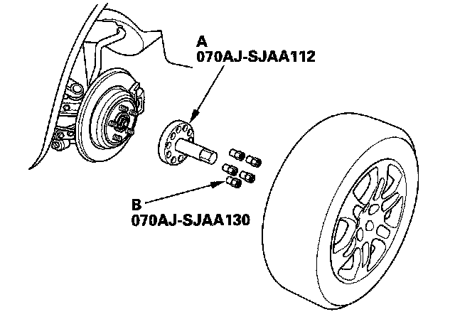
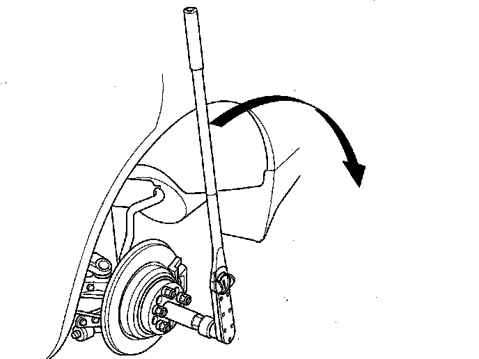

SH-AWD Function Test
SH-AWD Function TestSpecial Tools Required
- Adapter, torque wrench 070AJ-SJAA112
- Nut, 14 x 1.5 mm 070AJ-SJAA130
Direct Electromagnetic Clutch Test
NOTE:
- No DTC was detected.
- The shift lever is in N.
- The SH-AWD control unit had been initialized.
- The tire pressures are at the specified value.
- Tire size and were are the same between the left and right tires.
1. Connect the HDS to the DLC.
2. Check that the differential fluid temperature is over 68°F (20°C) with the HDS. If it is below 68 (20°C) raise the temperature by driving the vehicle in circles or by constantly turning.
3. Raise the vehicle, and make sure it is securely supported.
4. Remove the rear wheels.
5. Install the adapter, torque wrench (A) and the nut (B) on the rear wheel hub.

6. Do the direct electromagnetic clutch test with the HDS. Go to Miscellaneous test menu/functional, select tests/direct electromagnetic clutch test, then follow the screen prompts.
7. Install a torque wrench on the special tool as shown on the HDS. Write down the torque value while slowly rotating the rear hub with the torque wrench as shown. (Turn the hub no more than 90 degrees in 7 to 10 seconds).

NOTE: Use a torque wrench capable of measuring up to 80 kg-m (580 lbf-ft) such as a commercially available Snap-on torque wrench TE352FUE.
8. Enter the torque value into the HDS, and wait for the test to finish.
- If the result shows the clutch driving force is normal, the clutch assembly is OK.
- If the result shows the clutch driving force is abnormal, replace the differential fluid, and retest. If the result still shows the clutch driving force is abnormal, replace the right and left differential side case.